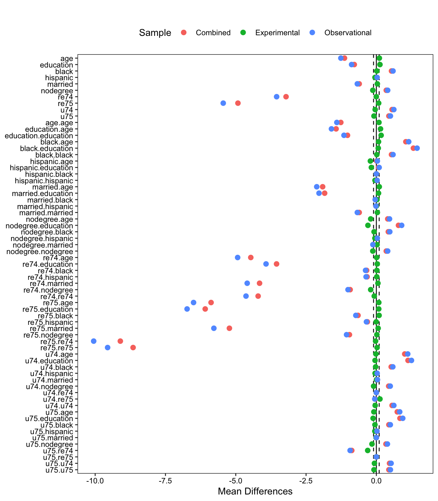
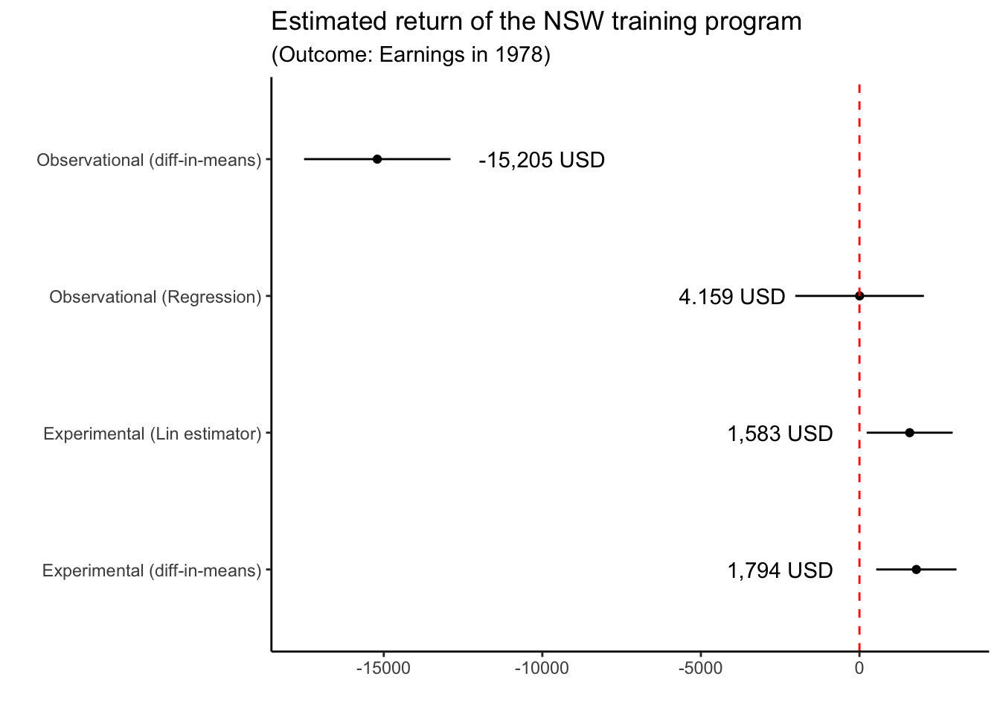
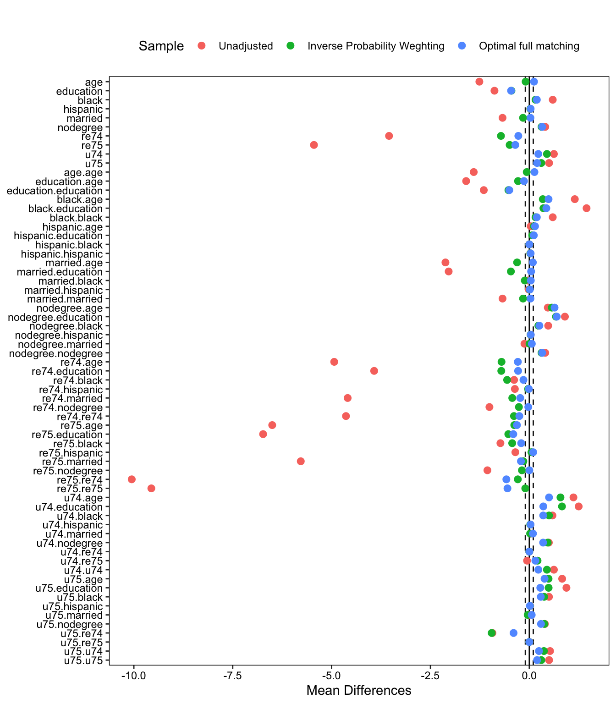
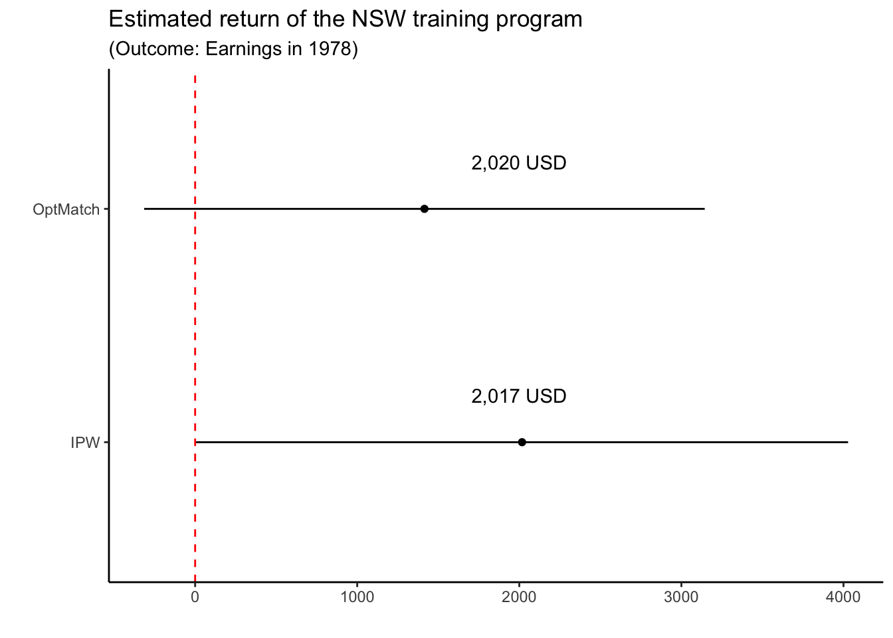
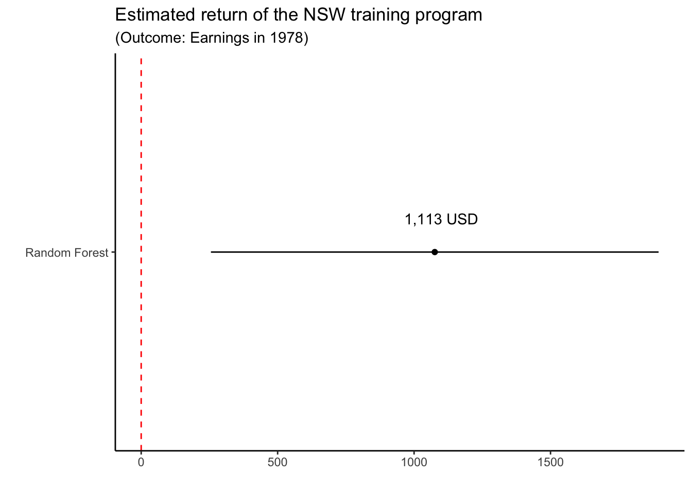
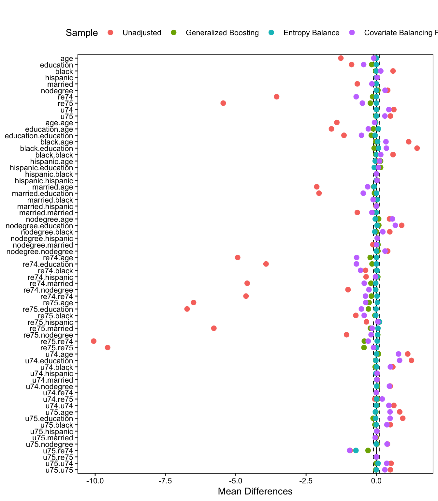
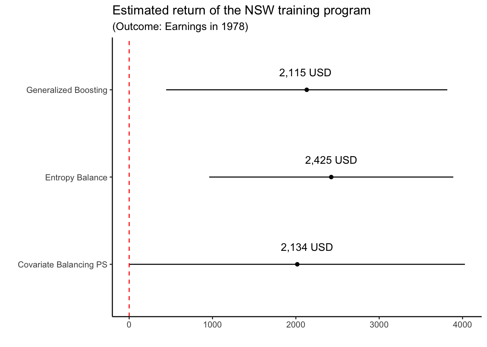
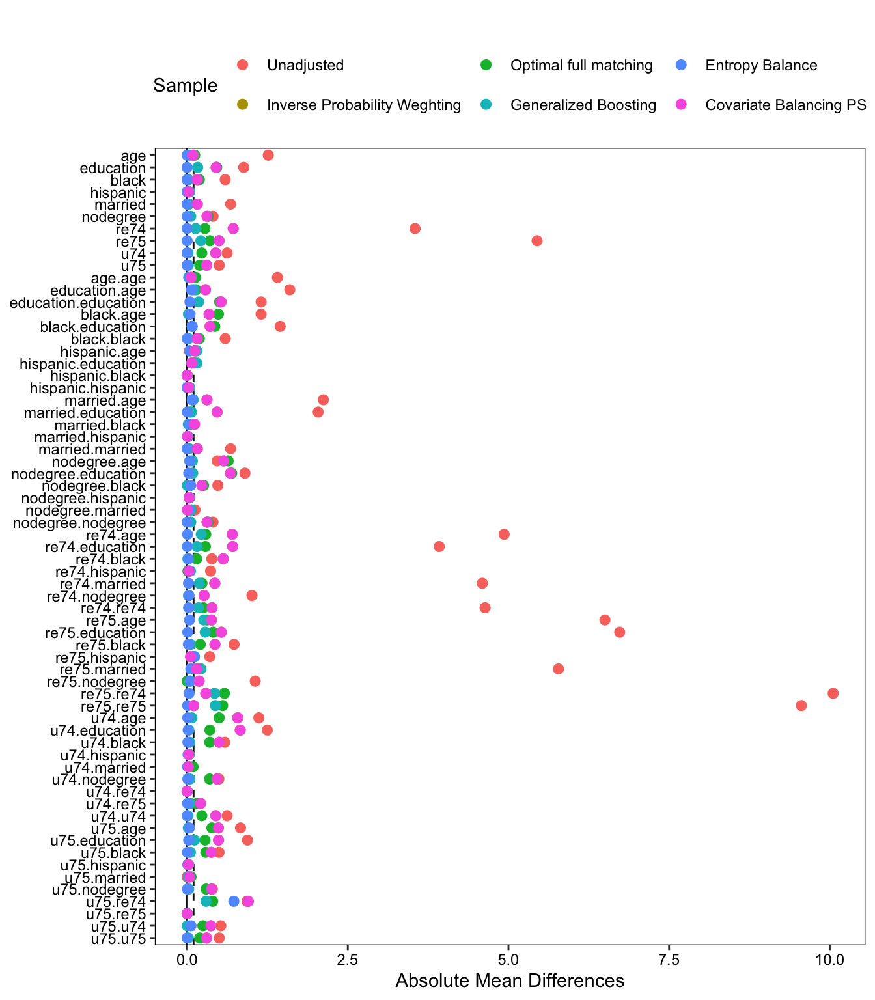
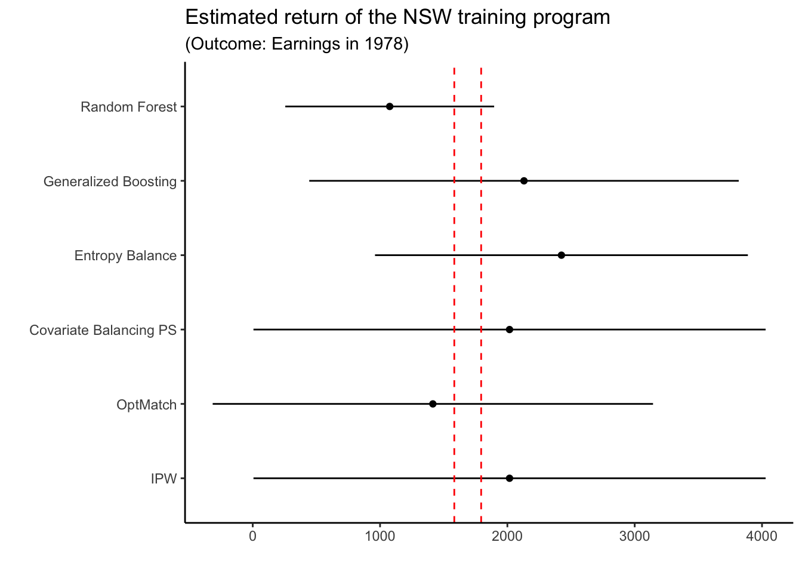

In what follows, we will demonstrate the use and compare different methods to estimate causal effects in observational data. Let’s denote units \(i, \dots ,N\), with treatment \(D \in \{0,1\}\), and potential outcomes \(Y_d\). In particular, as is common in this literature, we want to estimate an Average Treatment Effect on the Treated (ATT), defined as: \(E[\tau_i|D=1] = E[Y_{1i}-Y_{0i}|D=1]\).
We also observe a series of pre-treatment variables \(X_i\). To estimate the ATT from observational data, in addition to SUTVA or consistency of the potential outcomes, we would need to assume the following:
(Mean) Conditional independence of the control potential outcome and the treatment: \[E[Y_{0i}] \indep D|X\]
Positivity or common support \[0 > P(D|X) > 1\]
Under these conditions, we can estimate conditional treatment effects \(E[Y_{1i}-Y_{0i}|X=x]\) for each \(X\), and then recover the ATT using the adjustment formula: \[\sum_{X_{D=1}} \E[Y|D,X] P[X_{D=1}]\] Where \(X_{D=1}\) represent the covariate distribution among the treated.
Data
For this exercise, I will use the classical data in Lalonde (1986). This dataset is widely used to evaluate the performance of different methods to estimate causal effects using observational data, since it has the unique feature of providing an experimental component that could be used as a benchmark, and an observational component that can be used to test the proposed method.
The experimental portion of the data comes from the National Supported Work Demonstration (NSW), a labor training program that randomly selected participants to treatment (\(N_t = 185\)) and control (\(N_c = 260\)) conditions. The observational data, in addition to the treated group from the experiment, includes information about additional subjects from the Panel Survey of Income Dynamics (PSID), who are potential observational controls (\(N_{c,obs} = 2490\)).
The data includes 10 raw covariates: age, education (years), race (white, black, hispanic), marriage status (married/not), high school diploma (yes/no), and both previous earnings and unemployment (during 1974 and 1975). The outcome of interest is earnings in 1978. To better illustrate the difference between methods, and following Hainmueller (2012), we will use an expanded version of this covariates, including their squares and every two-way interaction (65 covariates in total).
library("cobalt") # Package to assess covariate balance
cobalt (Version 4.5.5, Build Date: 2024-04-02)
library("causalsens") # lalonde experimental vs lalonde observationallibrary("tidyverse")
── Conflicts ────────────────────────────────────────── tidyverse_conflicts() ──
✖ dplyr::filter() masks stats::filter()
✖ dplyr::lag() masks stats::lag()
ℹ Use the conflicted package (<http://conflicted.r-lib.org/>) to force all conflicts to become errors
####################### DATA LOADING ######################## First, let's load the experimental dataset (lalonde.exp)data(lalonde.exp, package="causalsens")# Then also the observational dataset (lalonde.psid)data(lalonde.psid, package="causalsens")########################### BASELINE BALANCE ###########################library("ebal") # Entropy balance (and matrixmaker function)
##
## ebal Package: Implements Entropy Balancing.
## See http://www.stanford.edu/~jhain/ for additional information.
# Let's expand the matrix of covariateslalonde.exp.covs <- lalonde.exp |>select(-"treat",-"re78") |>matrixmaker()lalonde.obs.covs <- lalonde.psid |>select(-"treat",-"re78") |>matrixmaker()# Then list the covariates we will be using in the analysiscovs_raw <- lalonde.exp |>select(-re78, -treat) |>names()covs <-names(lalonde.obs.covs)# Create a single dataset with both obs and experimental data# Just to plot balance in bothlalonde.mix <-rbind(lalonde.exp.covs |>mutate(treat = lalonde.exp$treat, wexp=1, wobs=ifelse(treat==1,1,0)), lalonde.obs.covs[lalonde.psid$treat==0,] |># Observational controlsmutate(treat=0, wexp=0, wobs=1)) # Weights for obs data#names(lalonde.mix)# Create "loveplot" to show covariate distribution in both samples
A first interesting inspection of the data is to assess the overall covariate balance in the different samples. As we can see in the first figure, in the experimental sample all the covariates are very well balanced among treated and controls. In the observational sample, on the other hand, treated and control subjects are very different, in particular with respect to their previous earning trajectories.
# The bal.table function takes the raw data and weights# And outputs a table of standardized difference between treated and controls# Love.plot takes a bal.table object as inputs# And transform it into a plot to facilitate presentationbal.tab(f.build("treat", covs), data=lalonde.mix, estimand ="ATT", m.threshold =.1,disp.var.ratio=FALSE, disp.means=TRUE,weights =c("wexp","wobs")) |># Weigght for experimental and observational samplelove.plot(abs=FALSE,sample.names =c("Combined","Experimental","Observational")) +labs(title=" ") +theme(legend.position ="top")
Warning: Large mean differences detected; you may not be using standardized
mean differences for continuous variables.
Warning: Standardized mean differences and raw mean differences are present in the same plot.
Use the `stars` argument to distinguish between them and appropriately label the x-axis.

Covariate Balance by sample
A second aspect that is worth noting are the estimated returns of the program, as we can see in the next figure. The experimental benchmark is around 1,600 and 1,800 USD, depending if we use a simple difference in means or the Lin estimator (a regression model with all raw covariates and their interactions with the treatment).
The observational difference in means, as expected from the huge covariate imbalance, is completely off: -15,205 USD. The multiple regression results with the observational data are more interesting, however. Although the point estimate is way below the point estimate from the experimental benchmark (suggesting only a 4USD return), the confidence interval resulting from the regression model overlaps with the benchmark returns. That’s it, the regression model does a good job in accounting for the uncertainty associated to estimate the effect of the program, providing a wide and uninformative confidence interval.
########################## BASELINE MODELS ##########################library("estimatr") # Lin estimator# Bivariate regression on experimental data: 1,794 USDexp_biv <-lm(re78 ~ treat, data=lalonde.exp) # Lin estimator (treatment fully interacted) on experimental data: 1,583 USDexp_lin <-lm_lin(f.build("re78", "treat"), covariates =f.build("", covs_raw), data=lalonde.exp) # Bivariate linear regression on observational data: -15,205 USDobs_biv <-lm(re78 ~ treat, data=lalonde.psid) # Multiple regression with controls on observational data: 4.159 USDobs_reg <-lm(f.build("re78", c("treat", covs_raw)), data=lalonde.psid)# Combine results (Store in a matrix for plotting)level_order <-c("Experimental (diff-in-means)","Experimental (Lin estimator)","Observational (Regression)","Observational (diff-in-means)")# Compile the resulting coefficients into a single matrixcoeffs <-tibble(estimator =factor((c("Experimental (diff-in-means)","Experimental (Lin estimator)","Observational (Regression)","Observational (diff-in-means)")), levels=level_order),coeff =c(exp_biv$coefficients[2], exp_lin$coefficients[2], obs_reg$coefficients[2], obs_biv$coefficients[2]),se =c(summary(exp_biv)$coefficients[2,2], exp_lin$std.error[2],summary(obs_reg)$coefficients[2,2],summary(obs_biv)$coefficients[2,2]))# Create the annotated plotggplot(coeffs, aes(x=coeff, y=estimator)) +geom_point() +# Error bars (Confidence intervals)geom_errorbarh(aes(x=coeff, y=estimator,xmin=coeff-2*se, xmax=coeff+2*se),height=0) +geom_vline(xintercept =0, linetype="dashed", color="red") +# Annotations (point estimates)annotate("text", x =-2500, y =1, label ="1,794 USD") +annotate("text", x =-2500, y =2, label ="1,583 USD") +annotate("text", x =-4000, y =3, label ="4.159 USD") +annotate("text", x =-10000, y =4, label ="-15,205 USD") +# Labelstheme_classic() +labs(title ="Estimated return of the NSW training program",subtitle ="(Outcome: Earnings in 1978)",x =" ", y=" ")
Warning in geom_errorbarh(aes(x = coeff, y = estimator, xmin = coeff - 2 * :
Ignoring unknown aesthetics: x

Estimated returns of the training program.
Traditional methods
Here we will demonstrate the use and performance of two “traditional” conditioning methods: inverse probability weighting (as implemented in the weighIt package), and optimal full matching on the propensity score (using the optmatch package). “Traditional” just means that they achieve balance in expectation, but not necessarily within sample.
# First, add treatment and outcome variables to the expanded set of covariateslalonde.obs <-cbind(lalonde.psid[,c("treat","re78")], lalonde.obs.covs)library("WeightIt") # Weighit function# Propensity Score Weighting (WeighIt package)nsw_ipw <-weightit(f.build("treat", covs), # Formula: treatment ~ covariatesdata = lalonde.obs, # Declare dataestimand ="ATT", # Declare estimandmethod ="ps") # Weighting method
Warning: (from `glm()`) glm.fit: algorithm did not converge
Warning: Propensity scores numerically equal to 0 or 1 were estimated,
indicating perfect separation and infinite parameter estimates. These may yield
problems with inference. Consider trying a different `link`. See
`help("method_glm", package = "WeightIt")` for details.
Warning: Some extreme weights were generated. Examine them with `summary()` and
maybe trim them with `trim()`.
#summary(nsw_psw)# Optimal Full matching (optmatch package)library("optmatch")# Create a propensity score using a logit with expanded covariatesps <-glm(f.build("treat", covs), family = binomial, data = lalonde.obs)
Warning: glm.fit: algorithm did not converge
Warning: glm.fit: fitted probabilities numerically 0 or 1 occurred
# Create the optimal full matched samplensw_full <-fullmatch(ps, data = lalonde.obs)
Warning: glm.fit: algorithm did not converge
Warning: glm.fit: fitted probabilities numerically 0 or 1 occurred
Warning in predict.lm(object, newdata, se.fit, scale = 1, type = if (type == :
prediction from rank-deficient fit; attr(*, "non-estim") has doubtful cases
#summary(nsw_full)
As we can see, both inverse probability weighting and optimal full matching greatly increase covariate balance with respect to the unadjusted observational comparison. Optimal full matching is slightly better in general, but the differences are not striking.
Warning: Large mean differences detected; you may not be using standardized
mean differences for continuous variables.
Warning: Standardized mean differences and raw mean differences are present in the same plot.
Use the `stars` argument to distinguish between them and appropriately label the x-axis.

Covariate Balance by Method
What about the estimated return? As we can see, both models estimate positive and statistically significant returns to the program of around 2,000 USD. The only noticeably difference is the efficiency gain of optimal full matching with respect to IPW.
ipw_out <-lm_robust(f.build("re78", c("treat", covs_raw)), data=lalonde.obs, weights =get.w(nsw_ipw))full_out <-lm_robust(f.build("re78", c("treat", covs_raw)), data=lalonde.obs, weights =get.w(nsw_full))coeffs_traditional <-tibble(estimator =factor(c("IPW", "OptMatch")),coeff =c(ipw_out$coefficients[2], full_out$coefficients[2]),se =c(ipw_out$std.error[2], full_out$std.error[2]))# Create the annotated plotggplot(coeffs_traditional, aes(x=coeff, y=estimator)) +geom_point() +geom_errorbarh(aes(x=coeff, y=estimator,xmin=coeff-2*se, xmax=coeff+2*se),height=0) +geom_vline(xintercept =0, linetype="dashed", color="red") +annotate("text", x =2000, y =1.2, label ="2,017 USD") +annotate("text", x =2000, y =2.2, label ="2,020 USD") +theme_classic() +labs(title ="Estimated return of the NSW training program",subtitle ="(Outcome: Earnings in 1978)",x =" ", y=" ")
Warning in geom_errorbarh(aes(x = coeff, y = estimator, xmin = coeff - 2 * :
Ignoring unknown aesthetics: x

Estimated returns of the training program.
Flexible outcome model
Here I use traditional random forest (not optimazed for causal inference) to estimate separate regressions for the treated and the controls, and then taking the difference between them, using the randomForest package. This will not result in a balanced sample or pseudo-population, but it will allow to obtain estimate returns to the program participation directly comparable with the previous sections.
One important caveat is that I am using a very rough approximation using the standard formula for the standard error of a difference in means, since it is generally not straightforward to estimate uncertainty in ML models. It is also important to note that, given our estimand of interest being the ATT, we will use the model fitted to the controls to estimate the expected outcome for the treated units.
The resulting estimate of the return is 1,113 USD, somewhat closer to the (difference-in-means) experimental benchmark than the previous models.
library("randomForest")
randomForest 4.7-1.1
Type rfNews() to see new features/changes/bug fixes.
Attaching package: 'randomForest'
The following object is masked from 'package:dplyr':
combine
The following object is masked from 'package:ggplot2':
margin
# Construct the random forest for the controlsrf_control <-randomForest(f.build("re78", covs), # Formula: treatment ~covariatesdata=lalonde.obs |>filter(treat==0), # Filter: keep only controlsmty=3, ntree=1000) # mty: number of covariate available at each split# Construct the random forest for the treatedrf_treated <-randomForest(f.build("re78", covs), # Formula: treatment ~covariatesdata=lalonde.obs |>filter(treat==1), # Filter: keep only controlsmty=3, ntree=1000) # mty: number of covariate available at each split# Create predictions for treated and controls (using treated data: ATT!)# This produce is likely invalid inference, but I show it as an approximation# Predictions for treated unitsrf_yhat_treat <-predict(rf_treated)# Prediction for treated units under control (control model)rf_yhat_control <-predict(rf_control, newdata = lalonde.obs |>filter(treat==1))# Model resultsrf_out <-tibble(estimator ="Random Forest",coeff =mean(rf_yhat_treat) -mean(rf_yhat_control),se =sqrt(var(rf_yhat_treat)/185+var(rf_yhat_control)/185))ggplot(rf_out, aes(x=coeff, y="Random Forest")) +geom_point() +geom_errorbarh(aes(x=coeff, y="Random Forest",xmin=coeff-2*se, xmax=coeff+2*se),height=0) +geom_vline(xintercept =0, linetype="dashed", color="red") +annotate("text", x =1100, y =1.1, label ="1,113 USD") +theme_classic() +labs(title ="Estimated return of the NSW training program",subtitle ="(Outcome: Earnings in 1978)",x =" ", y=" ")
Warning in geom_errorbarh(aes(x = coeff, y = "Random Forest", xmin = coeff - :
Ignoring unknown aesthetics: x

Estimated returns of the training program.
Calibration weighting
Here I will demonstrate methods that, in contrast to “traditional” estimators, seek to achieve balance (and, if possible, exact mean balance) in the sample and not just in expectation, and do so with minimum variance.
I will exemplify the use of three methods: one IPW model with the propensity score estimated using generalized boosting, entropy balance, a reweighting method that solves an optimization problem to achieve maximum in sample balance; and and a combination of both requirements (propensity score and weighting), the Covariate Balancing Propensity Score, which solves an optimization problem with the double constrain of predicting the treatment status of a unit based on covariates (the propensity score), and doing so with the restriction of achieving the maximum in sample balance. All these methods are implemented in the WeightIt package.
Warning: glm.fit: algorithm did not converge
Warning: Some extreme weights were generated. Examine them with `summary()` and
maybe trim them with `trim()`.
As we can see, all the methods achieve very satisfactory balance. There is no considerable difference between the method, except for the notorious balanced sample resulting from ebal.
Warning: Large mean differences detected; you may not be using standardized
mean differences for continuous variables.
Warning: Standardized mean differences and raw mean differences are present in the same plot.
Use the `stars` argument to distinguish between them and appropriately label the x-axis.

Covariate Balance by Method
In terms of the outcome estimation, we can see that both methods relying on Propensity Score estimation calculate a return of around 2,100 USD, while the reweighted sample using entropy balance overestimate the returns of the program, calculating an effect of around 2,400 USD.
gbm_out <-lm_robust(f.build("re78", c("treat", covs_raw)), data=lalonde.obs, weights =get.w(nsw_gbm))ebal_out <-lm_robust(f.build("re78", c("treat", covs_raw)), data=lalonde.obs, weights =get.w(nsw_ebal))cbps_out <-lm_robust(f.build("re78", c("treat", covs_raw)), data=lalonde.obs, weights =get.w(nsw_cbps))coeffs_ml <-tibble(estimator =factor(c("Generalized Boosting","Entropy Balance", "Covariate Balancing PS")),coeff =c(gbm_out$coefficients[2], ebal_out$coefficients[2], cbps_out$coefficients[2]),se =c(gbm_out$std.error[2], ebal_out$std.error[2], cbps_out$std.error[2]))# Create the annotated plotggplot(coeffs_ml, aes(x=coeff, y=estimator)) +geom_point() +geom_errorbarh(aes(x=coeff, y=estimator,xmin=coeff-2*se, xmax=coeff+2*se),height=0) +geom_vline(xintercept =0, linetype="dashed", color="red") +annotate("text", x =2134, y =1.2, label ="2,134 USD") +annotate("text", x =2425, y =2.2, label ="2,425 USD") +annotate("text", x =2115, y =3.2, label ="2,115 USD") +theme_classic() +labs(title ="Estimated return of the NSW training program",subtitle ="(Outcome: Earnings in 1978)",x =" ", y=" ")
Warning in geom_errorbarh(aes(x = coeff, y = estimator, xmin = coeff - 2 * :
Ignoring unknown aesthetics: x

Estimated returns of the training program.
Comparison
Let’s use two metrics to compare the performance of different methods: 1) the covariate balance they are able to achieve; 2) how close their estimate of the ATT comes to the experimental benchmark. This is just a combination of the previous graphs to show in one place all the results and facilitate the comparison.
First, we can see that most methods tend to outperform the traditional IPW in terms of achieving balance. The difference is not so clear with respect to the optimal full matching implementation, so we can see that it is still a state-of-the-art approach (This will not be true in general for other matching approaches, which tend to be outperformed by optimal full matching). The only estimator that systematically outperforms the rest in terms of balance it Entropy Balancing.
Warning: Large mean differences detected; you may not be using standardized
mean differences for continuous variables.
Warning: Standardized mean differences and raw mean differences are present in the same plot.
Use the `stars` argument to distinguish between them and appropriately label the x-axis.

Covariate Balance by Method
In terms of effect estimation, let’s look at the consolidated version. Experimental benchmarks are in the vertical lines. On the good side, all the estimators produce confidence intervals that cover the true parameters (both the difference-in-means and the Lin estimator in the experimental sample). In general, either matching or direct balancing tend to produce more precise estimates, while weighting based on the propensity score tend to be accompanied by more variance.
We can also see, in terms of the effect estimates, that most methods estimate higher benefits of the program than the experimental benchmark. This does not necessarily means that those effects are biased, though, since the experiment used as benchmark is but one realization, itself subject to sampling variation.
rf_out$estimator <-as.factor(rf_out$estimator)coeffs_all <-rbind(coeffs_traditional, coeffs_ml, rf_out)# Create the annotated plotggplot(coeffs_all, aes(x=coeff, y=estimator)) +geom_point() +geom_errorbarh(aes(x=coeff, y=estimator,xmin=coeff-2*se, xmax=coeff+2*se),height=0) +geom_vline(xintercept =1794, linetype="dashed", color="red") +geom_vline(xintercept =1583, linetype="dashed", color="red") +theme_classic() +labs(title ="Estimated return of the NSW training program",subtitle ="(Outcome: Earnings in 1978)",x =" ", y=" ")
Warning in geom_errorbarh(aes(x = coeff, y = estimator, xmin = coeff - 2 * :
Ignoring unknown aesthetics: x

Estimated returns of the training program.
Augmented estimator
Doubly-robust methods, mostly known as the augmented propensity score weighting estimator, is a combination of regression modeling and weighting. It called doubly robust because it is sufficient for one of the piece (propensity score, outcome model) to be correctly specified to have an unbiased estimator of the causal effect.
More agnostically, we can say that the errors in the models multiply each other, so even if no piece is perfectly estimate, we can in general observe an improved behavior.
Here we will implement a doubly robust estimator “by hand”, combining the weights produced by Entropy Balance, and the predictions of \(\E[Y_{0i}|D=0, X]\) obtained from the Random Forest model for the controls.
We can see that, among all estimators, the doubly robust version just described here generates the closest point estimate with respect to the experimental benchmark, and its confidence interval includes the true parameter.
# Using RF model for the outcome regressiony1_hat <-predict(rf_treated, newdata = lalonde.obs) # Used for ATEy0_hat <-predict(rf_control, newdata = lalonde.obs) # Used fot ATT# Using ebal for weighting, adjusting for predicted Y(0) functiondr_out <-lm_robust(re78 ~ treat + y0_hat, data=lalonde.obs, weights =get.w(nsw_ebal))coeffs_dr <-tibble(estimator ="Doubly Robust Estimator",coeff = dr_out$coefficients[2],se = dr_out$std.error[2])coeffs_all <-rbind(coeffs_all, coeffs_dr)# Create the annotated plotggplot(coeffs_all, aes(x=coeff, y=estimator)) +geom_point() +geom_errorbarh(aes(x=coeff, y=estimator,xmin=coeff-2*se, xmax=coeff+2*se),height=0) +geom_vline(xintercept =1794, linetype="dashed", color="red") +geom_vline(xintercept =1583, linetype="dashed", color="red") +theme_classic() +labs(title ="Estimated return of the NSW training program",subtitle ="(Outcome: Earnings in 1978)",x =" ", y=" ")
Warning in geom_errorbarh(aes(x = coeff, y = estimator, xmin = coeff - 2 * :
Ignoring unknown aesthetics: x